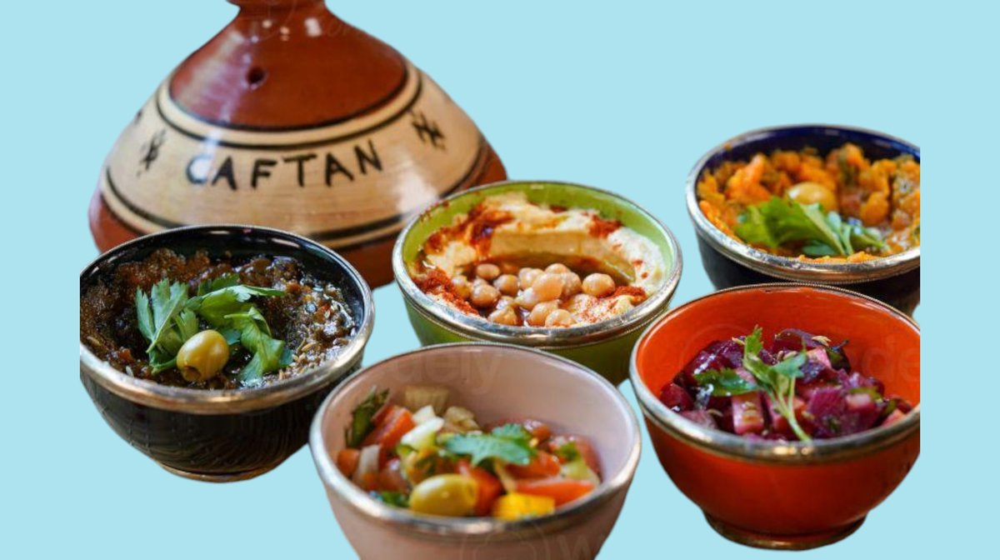

La Maison
Un voyage marocain au cœur de Luxembourg.
Caftan est un café-restaurant marocain et bar à cocktails ouvert en septembre 2021 sur l'avenue Pasteur, dans le quartier de Limpertsberg à Luxembourg. Inspiré des paysages envoûtants du Maroc — des plages ensoleillées d'Essaouira aux murs bleu cobalt du jardin Majorelle à Marrakech — Caftan invite ses hôtes à un voyage sensoriel au-delà des sens. Dans un cadre Art Déco sublimé par des accents orientaux authentiques, savourez des tajines mijotés, des couscous généreux et des mezze hauts en couleurs, le tout accompagné d'un thé à la menthe ou d'un cocktail signature. Au sous-sol, une boutique souk prolonge le voyage.
Tajines & couscous
Des plats traditionnels marocains mijotés avec patience, épices de l'Atlas et produits frais de saison.
Cadre Art Déco marocain
Lignes Art Déco et touches orientales authentiques — zellige, lanternes, textiles aux couleurs du Maghreb.
Boutique souk
Au sous-sol, une boutique souk propose des souvenirs décoratifs marocains pour prolonger le voyage chez soi.